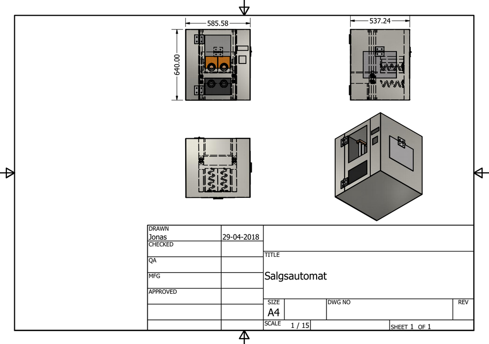
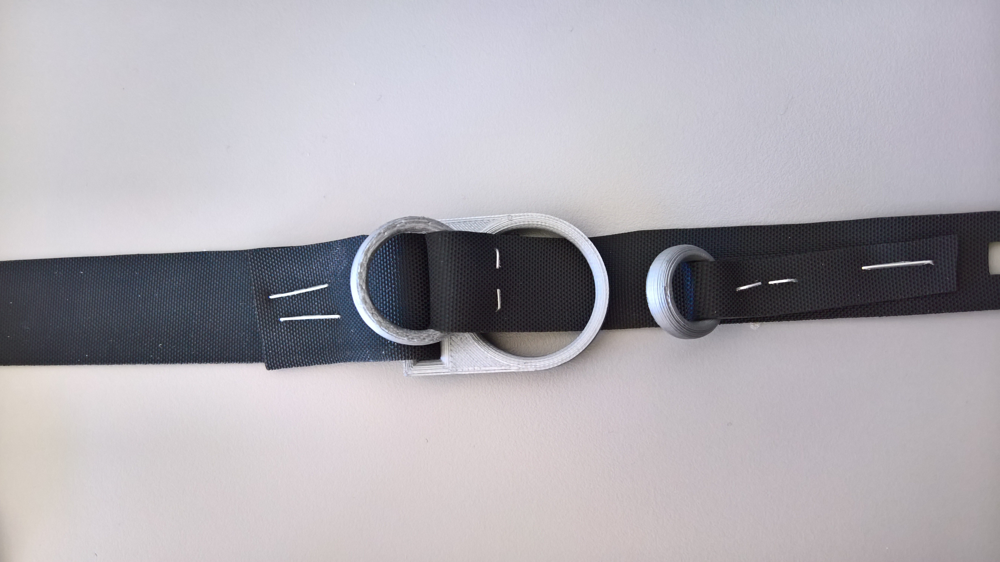
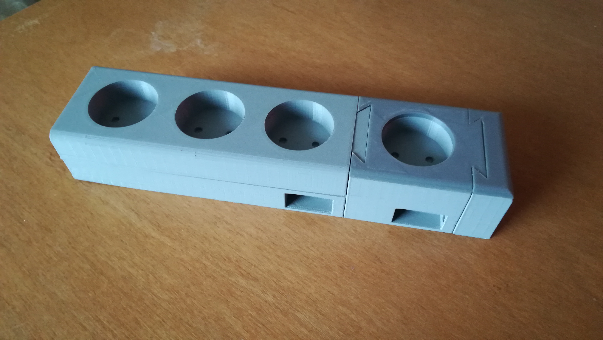
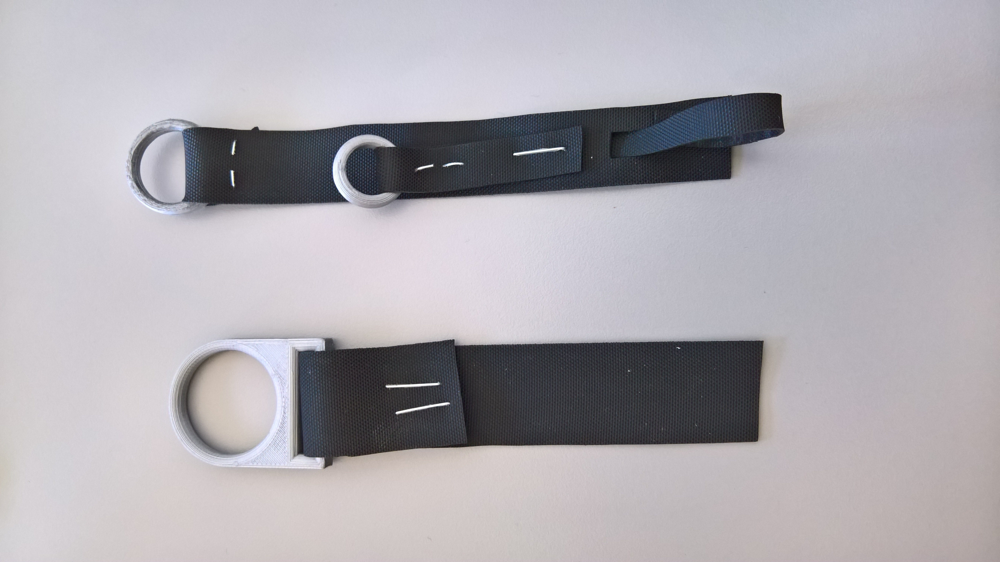
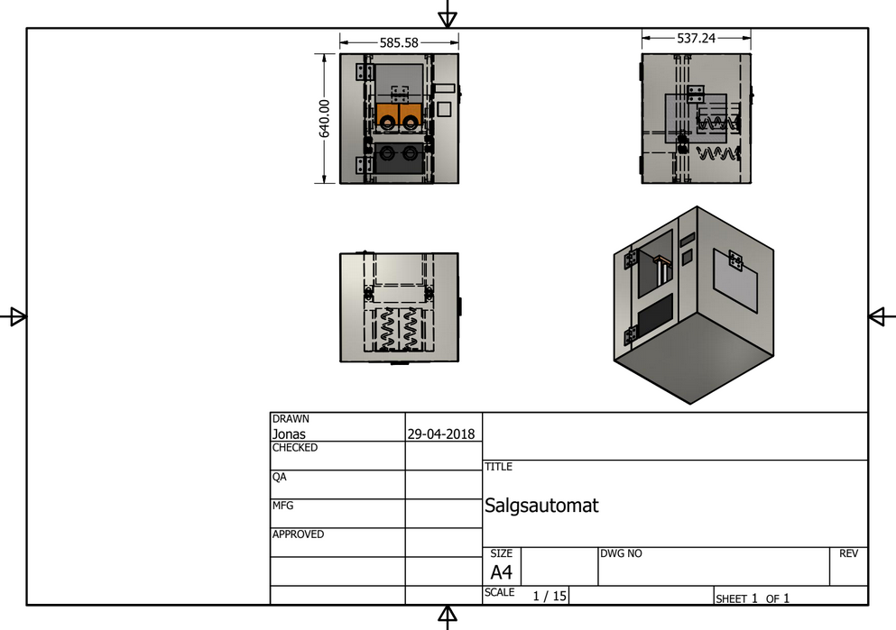
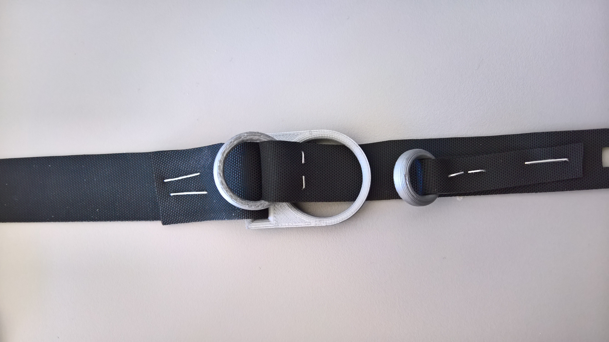
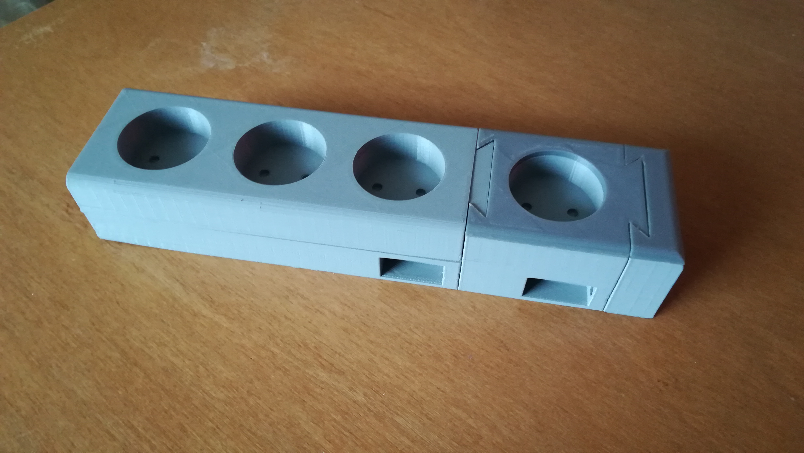
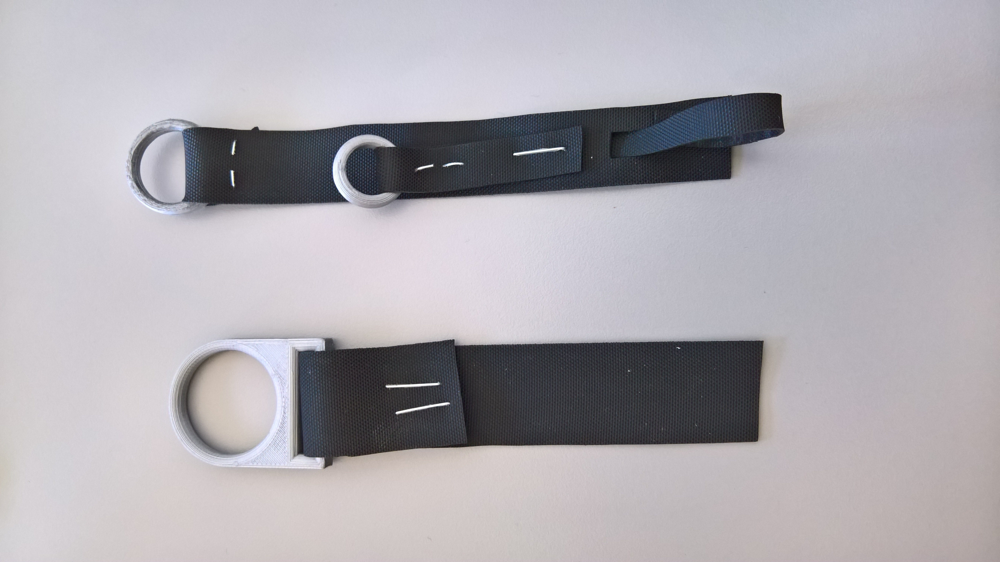

Rumrejsen_
13. September 2018
Projekt Next, er et koncept hvor du vil kunne bestille en rumrejse til et hotel på Månen eller Mars. Dette projekt var sigtet mod den rige befolkning, så det blev ikke holdt tilbage på fantasien, med hvor vildt det kunne blive. Fra designer rumdragter til luksus-rumskibe, vi inkluderede det hele.
Jeg stod for at skabe indhold til hjemmesiden. Vores kunder ville være velhavende personer, derfor valgte vi at lægge vægt på designer-mærker. Som jeg stod for at skabe indhold, stod jeg også for, at få indholdet på hjemmesiden til passe ind korrekt. Det skulle i bare se godt ud, men også fungere teknisk godt. Websitet endte med at være en onepage, med mange visuelle elementer til at illustrere og visualiserer konceptet.
Standarddans_
25. Oktober 2018
Hopla Standarddans, er en fiktiv sportsorganisation som vi skulle skabe et website for. Før vi startede på websitet, havde en forrige gruppe arbejdet på det, som vi så overtog. Vi havde så til opgave at forbedre det. Vi gik derfor i dybden med at spørge målgruppen for at finde de forandringer der skulle laves.
Jeg havde til opgave at skrive koden til websitet. Da vi havde overtaget koden fra en anden gruppe, skulle jeg sætte mig ind i deres kode og forstå hvordan de havde bygget deres website op for at kunne bygge videre på det. Websitet blev drastisk lavet om, da den forrige gruppe ikke havde fanget deres målgruppe helt rigtig, men det kunne vi rette op på, og gøres deres website endnu bedre.
Aquamize_
15. November 2018
Aquamize var et brand vi skabte ud fra vores opgave omkring branding af vandflasker. Over 4 uger skabte vi et brand af vandflasker som folk selv kunne designe og tilpasse som de ønskede. Konceptet gjorde også så man kunne bestemme indholdet af flasken, så man 100% havde lavet sin egen vandflaske til eget brug.
Min rolle var at kode websitet og sætte det op. Websitet kom til at indeholde en side som skulle have sliders så det var muligt at justere vandet i vandflasken.
other work_


 






